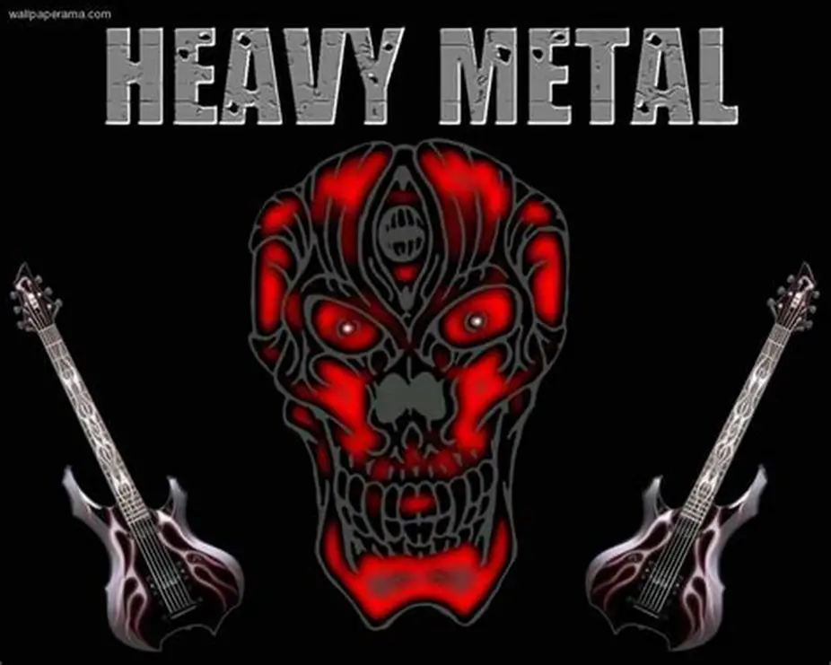

Heavy metal
Origen: finales de los 60s/70s. Guitarras potentes, solos y ritmo marcado.
Descripción: Nació en Reino Unido y EE. UU.; bandas clásicas: Black Sabbath, Judas Priest, Iron Maiden.
Origen: finales de los 60s/70s. Guitarras potentes, solos y ritmo marcado.
Descripción: Nació en Reino Unido y EE. UU.; bandas clásicas: Black Sabbath, Judas Priest, Iron Maiden.
Origen: inicios de los 80s. Rápido y agresivo, riffs y baterías intensas.
Descripción: Bandas representativas: Metallica, Slayer, Megadeth, Anthrax.
Origen: finales de los 80s. Voces guturales, afinaciones bajas y estructuras complejas.
Descripción: Evolucionó desde thrash/grindcore; bandas: Death, Cannibal Corpse, Morbid Angel.
Origen: segunda ola (principios de los 90s). Atmosférico y crudo.
Descripción: Bandas: Mayhem, Emperor, Darkthrone. Acento en atmósferas frías y producción lo-fi.
Tempo lento, atmósfera pesada y letras melancólicas.
Descripción: Subgénero sombrío; bandas: Candlemass, Cathedral, Trouble.